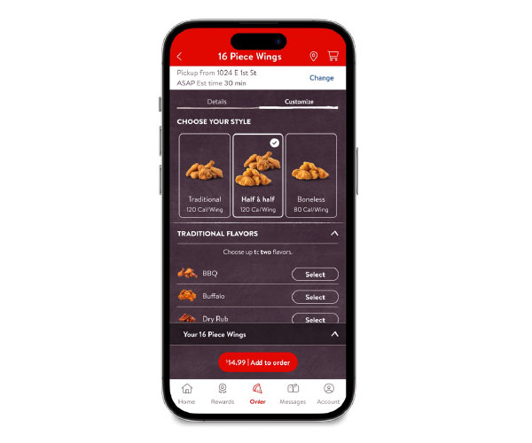
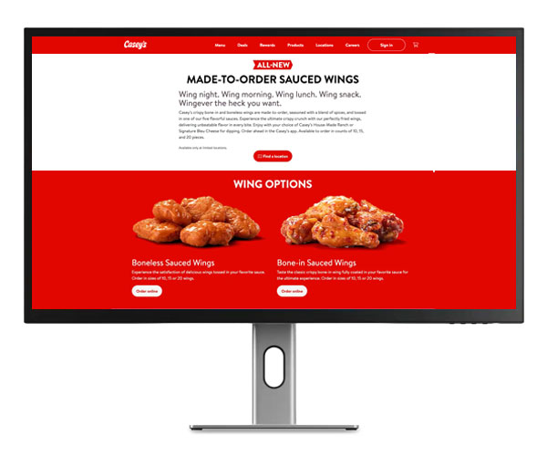
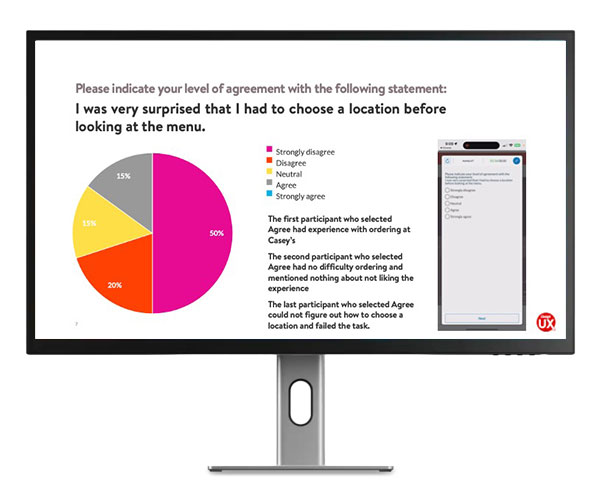
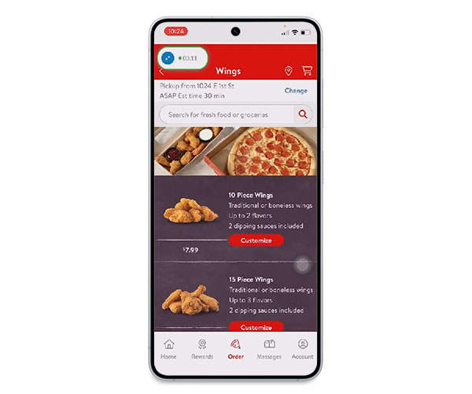

	<section id="wings">
	<div class="row">
		 <div class="column_half left_half">

<!-- The Target Display Container -->
<div id="mediaContainer" style="margin-top: 15px; min-height: 250px; padding: 10px; border-radius: 8px;">
  
  <!-- Image Element (Hidden by default) -->
  
  
  <!-- Video Element (Hidden by default) -->
  <video id="targetVideo" controls style="display: none; max-width: 100%; max-height: 450px; margin: auto; border-radius: 4px;">
    Your browser does not support the video tag.
  </video>
	
<!-- The Buttons <-->
<div class="row text-center">
<button onclick="displayMedia('_images/wings-app.jpg')"></button>
<button onclick="displayMedia('_images/wings-web.jpg')"></button>
<button onclick="displayMedia('_images/wings-localization.jpg')"></button>
<button onclick="displayMedia('_images/wings-usability-test.mp4')"></button>
</div>


</div>

<script>
function displayMedia(mediaUrl) {
  const imgElement = document.getElementById("targetImage");
  const videoElement = document.getElementById("targetVideo");

  // Check if the file URL ends with .mp4 (case-insensitive)
  if (mediaUrl.toLowerCase().endsWith('.mp4')) {
    
    // 1. Hide the image, show the video
    imgElement.style.display = "none";
    videoElement.style.display = "block";
    
    // 2. Load and play the local video
    videoElement.src = mediaUrl;
    videoElement.load();
    videoElement.play();
    
  } else {
    
    // 1. Hide the video, show the image
    videoElement.pause(); // Pause video if it was playing
    videoElement.style.display = "none";
    imgElement.style.display = "block";
    
    // 2. Change the local image source
    imgElement.src = mediaUrl;
  }
}
</script>
			 
    </div>
		
    <div class="column_half right_half">
      <h2>Car Wash Launch</h2>
		<p class="text-center">	<span class="badge">eCommerce</span> <span class="badge">Usability testing</span> <span class="badge">Landing page</span></p>
		<p>A new sauced wings program called for a new web and app ordering experience, and a supporting landing page. A new product is great, but unless your guests can order easily through the channel the are seeking, it may not be as successful as you want. I had the opportunity to design the ordering experience and test the usability through online usability testing, and design and build the marketing landing pages using html to support the soft launch.&nbsp;</p>
		<p>The program is a huge success to this day, and is expanding into more stores on a rolling basis. </p>
    </div>
		
		
		</div>
	
	</section>